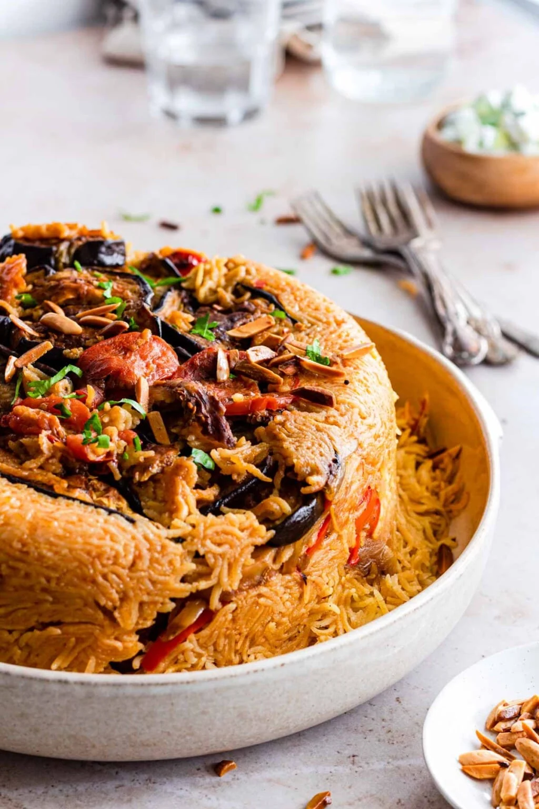

Who i am?
Contact me
Lets discover my fav dishes:
- shesh barak ^-^ These Middle Eastern homemade meat-stuffed dumplings cooked in yogurt are to die for!

- Seafood ^-^ Seafood is a vital source of protein and nutrients for many people, and there is no lack of seafood lovers across the world.

- maqluba ^-^ is a traditional dish served throughout the Levant. It consists of meat, rice, and fried vegetables placed in a pot which is flipped upside down when served, hence the name maqluba!
